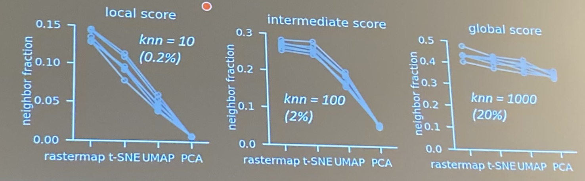

Trends in Computational Neuroscience: Cosyne 2022
March 2022
Before I dive in, let me explain what this blog post aims to do. This blog post does NOT explain what happened at Cosyne 2022. If you want to see what happened go to: Cosyne 2022 Resources. This post IS about clarifying the trends that transcend model animal, experiment vs. computation, and so many more of our field's dichotomies. These thoughts are my attempt at synthesizing not only where we currently stand as a field and community, but also where we hope to go.
When I started this endeavor of identifying trends I wanted to see all the talk titles together. No authors. No institutions. Just titles. I wanted to put myself into Laura's and Tim's (the organizers') minds and envision what they wanted us to get out of Cosyne 2022. So, I did just that. Before reading this post, I challenge you to look at my list and see what trends you generate! It'll help you at the end of this post, I promise üòÅ
With that backdrop, let's get started!! I identified eight üò± trends; they are:
-
✦ Behavior
✦ Comparing Artificial Neural Networks to (dare I say) Real Neural Networks üòâ
✦ Opportunities in Dimensionality Reduction
✦ Data Scaling
✦ Single Units ➡️ Population Level
✦ Machine Learning for Computational Neuroscience Lags
✦ Model Interpretability
✦ Attractors
1 - Behavior

One of THE üî•hottestüî• trends we saw at Cosyne 2022 was behavior. And honestly, most everything about it: from judging the performance of our models on both neural and behavioral metrics to building analysis pipelines specifically for behavior. A professor even said, "I know I reported a lot of behavioral results so let me pause here before I get to the neural results".
To hit this point home, I'm going to show you two conclusion slides that caught my eye. I added red arrows and underlines to really hit the behavior with neural point home! These slides were presented on different days in different sessions, but the striking similarity between their layouts speaks for itself. At Cosyne 2022, behavior was üëë!
From Dan Yamins
From Carsen Stringer
Behavior was heavily discussed at Cosyne 2022 for several reasons: (1) we now have the ability to collect huge amounts of data (see the Data Scaling section), and (2) it's important for us to analyze as many datastreams (neural, behavioral, etc.) as possible to fully describe the scientific phenomenons we observe.
There were many subfields of behavior that were addressed, but one I want to dig into is pose tracking. There were many, many, many examples discussed throughout the talks, posters, and hallways of Cosyne 2022.
From Kiah Hardcastle
- Deep Lab Cut
- TREBA - Trajectory Embedding for Behavior Analysis
- Continuous Whole-Body 3D Kinematic Recordings
- SLEAP - Social LEAP Estimates Animal Poses
2 - Comparing Artificial Neural Networks to (dare I say) Real Neural Networks üòâ
I know, I know, I'm being cheeky! But, I have to motivate you through this post somehow ü§ì This area of research was incredibly well represented at Cosyne 2022, but it took numerous forms; I'm going to highlight a few that encapsulate the main directions.
The first is 1:1 mapped artificial and biological neural networks. Let me expand: the artificial neural network's units have a direct 1:1 mapping with biological neurons (in this case the locus coeruleus neurons in drosophila). The knockout training paradigm is the key to get direct correspondance between locus coeruleus (LC) artificial neurons and biological LC neurons.
From Mala Murthy
The second is generative modeling! If you take in real neural data and learn its underlying distribution, then you can generate your own neural data üòÆ The generated, and hopefully realistic, neural data can then be compared to real neural data. Why you might ask?... For incredibly difficult neuroengineering problems like: training data-hungry models in data-limited regimes (I'm only a little biased since this is what I work on üôÉ). If underlying distributions and data characteristics get you going, I recommend sticking around for the Opportunities in Dimensionality Reduction section!
From Eva Dyer
The third is mixing biological mechanisms with artificial tasks. The MNIST digit dataset and classification task are canonical in machine learning. When we use biological mechanisms (like saccading) to solve classic artificial tasks (like digit classification), we move to an exciting hybrid space where we can analyze both artificial and biological systems with the same metrics.
From Valerio Mante
Speaking of metrics... the last category is similarity metrics between neural networks. Wow, it's almost like somebody planned that üòÉ Defining metrics that allow us to quantify similarity or dissimilarity is crucial for sound comparisons between artificial and biological networks (or even biological to biological, and artificial to artificial). Notice the feedforward neural network and mouse brain beside one another in the slide below!! If this sings to you üé∂, check out the next section: Opportunities in Dimensionality Reduction.
From Alex Williams
3 - Opportunities in Dimensionality Reduction
Tough to go wrong with Sir Mix-a-Lot, but at this point you might be asking yourself: "Sabera, you said dimesionality reduction, not big data! What gives?". What gives is that big data is often high dimensional!
From Carsen Stringer
This handily demonstrates that most all of us at Cosyne deal with high dimensional data, whether it be neural or behavioral. We all really want to and need to do dimensionality reduction, but honestly we can do better. I'll let an anonymous professor from Cosyne 2022 speak for me: "It is a crime against data to just use 3D". In a different workshop, when performing PCA on neural data, the principal components (PCs) explaining relatively low amounts of variance were still helpful in describing the genetic relationships between neural populations. Moreover, these relationships were not captured in the higher order PCs! Don't get me wrong, sometimes these techniques work as can be seen in the examples below, but why not do better?
From Mike Long
From Andre Fenton

From Carsen Stringer
- The Specious Art of Single-Cell Genomics
- Minimum-Distortion Embedding
- Tweet Thread - It's time to stop making t-SNE & UMAP plots.
- Tweet Thread - Tl;dr: definitely time to stop making t-SNE & UMAP plots.
4 - Data Scaling
From Shannon Schiereck

From Flywire
From Carsen Stringer
From Ethan Bromberg-Martin
Here are a few of the examples I found at Cosyne 2022 which span many animal models:
- High throughput behavioral training facilities for rats. This allows you to collect over 5.2 million üò± behavioral trials per year!!
- Flywire.ai, which is crowdsourcing the first centralized brain wiring diagram in drosophila.
- Deep learning models to automate everything from cell segmentation, to behavior tracking, to neural data analysis, etc.
- Mturk, or Amazon Mechanical Turk. It was used to generate human experimental data at Cosyne 2022. It has also been used in the machine learning community to get human annotations at scale.
In true academic form I will leave you with Exercises for the Reader. These exercises are trends I identified and collected examples for from Cosyne 2022. I will share what I gathered with you, but there is a catch üòè I would love for you to join the conversation and tell me what trends you identified! Once you do, I will gladly give you examples from any and all of the topics below!
Before I leave you, to synthesize your own trends I'm sure üòÖ, I want to thank George Barnum for helping me more eloquently verbalize my thoughts during earlier versions of this post! I also want thank you for sticking around to the end! I hope you learned something ü§ó